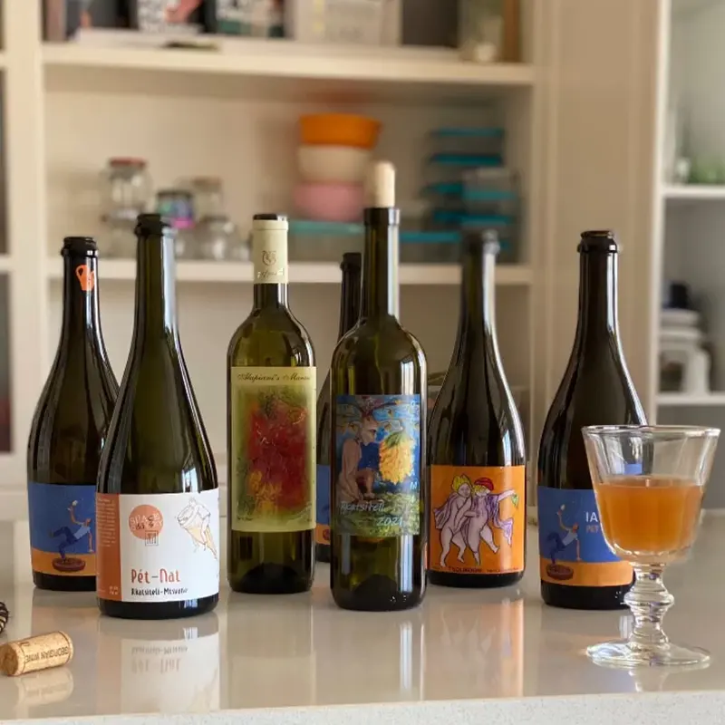
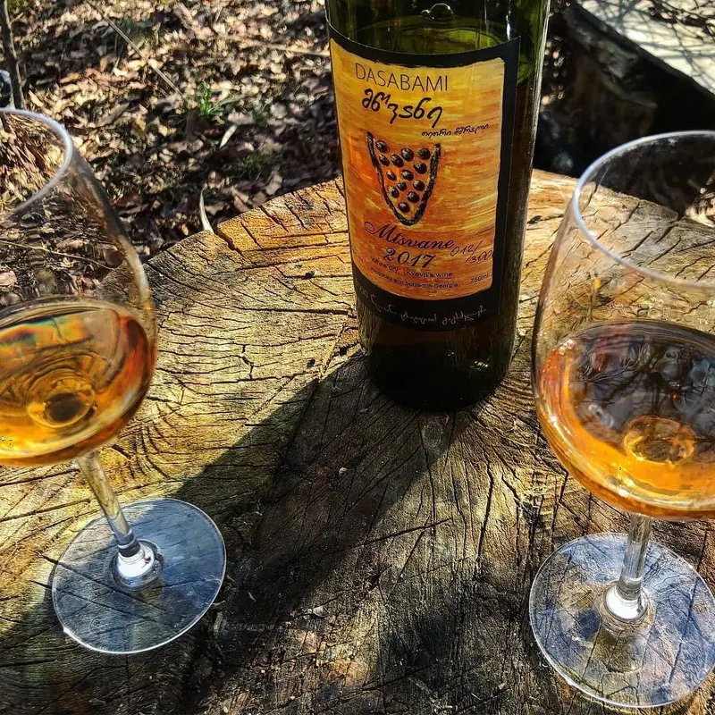
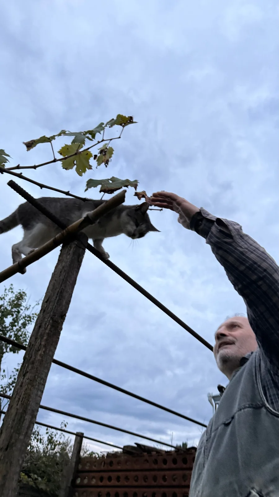
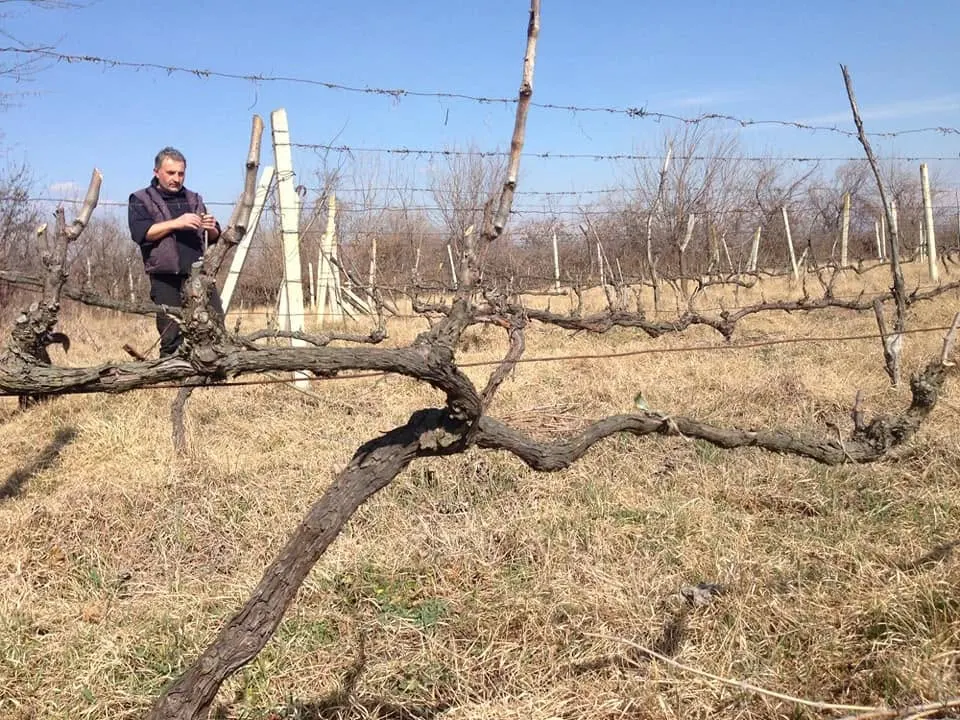

0ha
VineyardOrganic, family-farmed, in Tamarisi
Natural, organic qvevri wine from a 70-year-old family vineyard in Kvemo Kartli, Georgia. Four indigenous grapes, and a qvevri older than a century.

In the hills of Kvemo Kartli, one family farms a single organic hectare of 70-year-old vines, and lets Rkatsiteli, Mtsvane, Khikhvi and Tavkveri become wine the way Zaza’s father did: on their skins, in clay, under the earth.
VineyardOrganic, family-farmed, in Tamarisi

Old vinesThe age of the family vineyard

Bottles a yearAt most. Each wine is a few hundred bottles.

Year-old qvevriThe family’s clay vessel, older than a century

First bottledAfter three generations of making wine

Dasabami was founded by Zaza’s father in the village of Tamarisi, south of Tbilisi. Zaza took over the family marani from him, and today the whole family makes the wine together.
A soldier by profession, Zaza first bottled the family wine in 2012. Dasabami is a member of Georgia’s Natural Wine Association.


Organic grapes, wild yeasts, nothing fined, nothing filtered. Whites become amber on their skins in qvevri; Tavkveri is the red.
Every wine: ambient yeast, fermented and aged in qvevri, unfined, unfiltered, no added SO₂, alluvial soil, 750 ml.
Source: Roni Selects tech sheets (US importer). Bars compare against 12 months and 900 bottles.
Qvevri winemaking is how Georgia has made natural wine for some 8,000 years. At Dasabami it hasn’t changed.




One hectare in Tamarisi, east of the Khrami River. The vineyard is about 70 years old, planted with Rkatsiteli, Mtsvane and Tavkveri; the Khikhvi was added around 2009.
A family vineyard, worked season by season. In winter the old trellised vines are pruned by hand, ready for the next vintage.
Grapes ferment with their own ambient yeasts in clay qvevri buried in the earth, one of them more than a century old. Whites stay on their skins for three to twelve months and turn amber.
Unfined, unfiltered, no added SO₂. Each wine is a few hundred bottles, about 3,000 in all each year.
this Rkatsiteli she selected for us was divine.
Counted among the growers who started Georgia’s natural wine movement.
A single family hectare, about 3,000 bottles a year, and a family qvevri that has outlived a century.
Profiled in Tasting Georgia: a drive with Zaza from Tbilisi to his Tamarisi cellar, by way of the qvevri cellars at Shavnabada.
Zaza took over his father’s marani, and brings his young son to the vines so the tradition carries on.
The 2010 Rkatsiteli, five years in qvevri: silky and amber-gold, with cloudberry and sea buckthorn, and superb with cheese.
Hamburg’s natural wine shop filed the Khikhvi 2018 under high-energy, vibrant and deep.
From our Instagram, and from the bars, shops and friends who tag us.
Places that have stocked or poured Dasabami. For current bottles, write to us.


Shops around the world that have listed Dasabami. To buy a bottle, write to us.
 MORE Natural Wine
Berlin · ships EU & UK
Khikhvi 2019
MORE Natural Wine
Berlin · ships EU & UK
Khikhvi 2019
 Hop Burns & Black
London, UK
Rkatsiteli 2016
Hop Burns & Black
London, UK
Rkatsiteli 2016
 The Cellar d’Or
Ithaca, New York
Rkatsiteli 2022 & 2020
The Cellar d’Or
Ithaca, New York
Rkatsiteli 2022 & 2020
 Grand Wine Cellar
Syosset, New York
Rkatsiteli · 12-bottle case
Grand Wine Cellar
Syosset, New York
Rkatsiteli · 12-bottle case
 Flatiron Wines
San Francisco
Dasabami collection
Flatiron Wines
San Francisco
Dasabami collection
Profiles, reviews & importer
 Roni Selects
US importer
Producer page & tech sheets
Roni Selects
US importer
Producer page & tech sheets
 Raisin
Natural wine app
Community reviews
Raisin
Natural wine app
Community reviews
 Natural Wine Association
Georgia
Member profile & vineyards
Natural Wine Association
Georgia
Member profile & vineyards
 Wines of Georgia
Directory
Domaine profile
Wines of Georgia
Directory
Domaine profile
 Vivino
3.8 from 222 ratings
Winery page
Vivino
3.8 from 222 ratings
Winery page

Dasabami pours at Amber Georgia, the travelling fair for Georgian natural wine, on 28 November 2026.
Dasabami (დასაბამი, “the beginning”) is a family natural-wine cellar in Tamarisi, a village in Marneuli Municipality, Kvemo Kartli, Georgia. It was founded by winemaker Zaza Darsavelidze’s father and makes up to about 3,000 bottles a year of natural, organic qvevri wine from one hectare.
Zaza Darsavelidze and his whole family. Zaza is the third generation of the family to make wine in Lower Kartli, and he first bottled the family wine in 2012.
In Tamarisi village, Marneuli Municipality, in Kvemo Kartli (Lower Kartli), Georgia, south of Tbilisi and east of the Khrami River. The vineyard is about one hectare and about 70 years old.
Four indigenous Georgian varieties: Rkatsiteli, Mtsvane and Khikhvi, which are made as amber wines, and Tavkveri, a red. The old vines are about 70 years old; the Khikhvi was planted around 2009.
In qvevri, clay vessels buried in the ground. Grapes ferment with ambient yeasts; white grapes stay on their skins for three to twelve months and turn amber. The wines are unfined, unfiltered and bottled with no added SO₂. One family qvevri is more than a century old.
Yes. Dasabami is a natural Georgian wine: the vineyard is farmed organically, the importer’s tech sheets list no added sulphites, ambient yeast and no fining or filtration, and Dasabami is a member of Georgia’s Natural Wine Association.
Up to about 3,000 bottles a year in total. Each wine is a small lot, from 180 bottles (Tavkveri 2020) to 900 bottles (Rkatsiteli 2020).
In Tbilisi at 27 Wine Cellar & Shop and Sulico Wine Bar (27 Zandukeli St) and at Dadi Wine Bar (4 Dadiani St, by Freedom Square), and in the United States through the importer Roni Selects. Online shops that have listed it include MORE Natural Wine (Berlin), Hop Burns & Black (London), The Cellar d’Or and Grand Wine Cellar (New York). To buy a bottle, write to us or message @dasabami on Instagram.
Dasabami (დასაბამი) is Georgian for “the beginning” or “origin”.
Send us an email, or message @dasabami on Instagram.